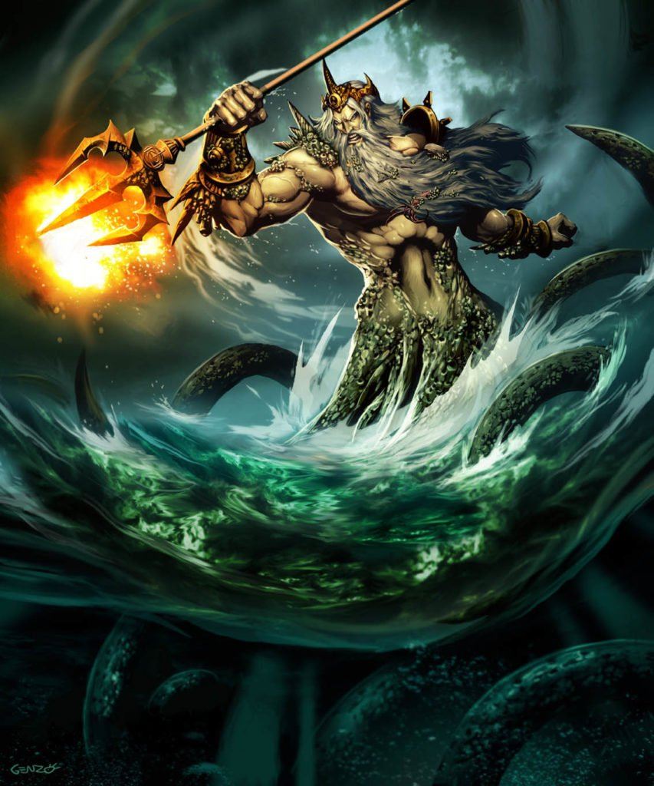

Poseidón o Posidón (en griego antiguo, Ποσειδῶν; en griego moderno, Ποσειδώνας; en latín, Posidon) es el dios de los mares y, como «Agitador de la Tierra», de los terremotos en la mitología griega. El nombre del dios marino etrusco Nethuns fue adoptado en latín para Neptuno (Neptunus) en la mitología romana, siendo ambos dioses del mar análogos a Poseidón.
La primera idea conservada del nombre, escrito en lineal B, es Po-se-da-o o Po-se-da-wae-ne, que
corresponden a Poseidaon y Poseidawonos en griego micénico; en griego homérico aparece como
Ποσειδάων (Poseidaōn); en eólico como Ποτειδάων (Poteidaōn); y en dórico como Ποτειδάν (Poteidan),
Ποτειδάων (Poteidaōn) y Ποτειδᾶς (Poteidas). Un epíteto común de Poseidón es Γαιήοχος Gaiēochos,
‘agitador de la Tierra’, epíteto que también se identifica en tablillas en lineal B.
Los orígenes del nombre «Poseidón» no están muy claros. Una teoría lo divide en un elemento que
significa ‘marido’ o ‘señor’ (πόσις posis, del pIE *pótis) y otro que significa ‘tierra’ (δᾶ da,
dórico para γῆ gē), obteniendo algo como ‘señor o esposo de la Tierra’, lo que lo relacionaría con
Deméter, ‘madre Tierra’. Walter Burkert considera que «el segundo elemento da permanece
desesperadamente ambiguo» y encuentra la interpretación ‘consorte de la Tierra’ «bastante imposible
de demostrar». Otra teoría interpreta el segundo elemento como relacionado con la palabra dawon,
‘agua’ en algunos idiomas indoeuropeos (por ejemplo sánscrito, df'nu:dew); esto haría que
Posei-dawōn fuera el ‘señor de las aguas’. Está también la posibilidad de que la palabra tenga un
origen pre-griego.
En la mitología griega, Hades (en griego antiguo ᾍδης [Hādēs], originalmente Ἅιδης [Hāidēs] o Ἀΐδης
[Aïdēs] –dórico Ἀΐδας [Aidas]–, ‘el invisible’; en griego moderno Άδης; en latín Hades) alude tanto
al antiguo inframundo griego como al dios de éste. La palabra hacía referencia en Homero sólo al
dios y el genitivo Αἱδού [Haidú], que era una elisión para designar ubicación: ‘la casa/dominio de
Hades’. Finalmente, también el nominativo llegó a designar la morada de los muertos.
Hades es el mayor hijo varón de Cronos y Rea.
Según el mito, él y sus hermanos Zeus y Poseidón derrotaron a los Titanes y reclamaron el gobierno
del cosmos, adjudicándose el inframundo, el cielo y el mar, respectivamente; la tierra sólida, desde
mucho antes provincia de Gea, estaba disponible para los tres al mismo tiempo.
En los antiguos mitos griegos, el reino de Hades es la neblinosa y sombría morada de los muertos
(también llamada Érebo), a la que iban todos los mortales. La filosofía griega posterior introdujo
la idea de que los mortales eran juzgados tras su muerte y se los recompensaba o maldecía. Muy pocos
mortales podrían abandonar este reino una vez que habían entrado, con la excepción de los héroes
Heracles y Teseo. Incluso Odiseo en su nekyia llama a los espíritus de los difuntos, en lugar de
descender hasta ellos.
Había varias secciones en el Érebo, incluyendo el Elíseo, los Campos de Asfódelos y el Tártaro. Los
mitógrafos griegos no son totalmente consistentes sobre la geografía del más allá. Un mito
completamente opuesto sobre la otra vida concierne al Jardín de las Hespérides, con frecuencia
identificado con las Islas de la Bendición, donde podían morar los héroes bendecidos.
En la mitología romana, la entrada al Inframundo localizada en el Averno, un cráter cercano a Cumas,
fue la ruta usada por Eneas para descender al reino de los muertos. Por sinécdoque, «Averno» puede
usarse como referencia a todo el inframundo. Los Inferi Dii eran los dioses romanos del inframundo.
Thor (del nórdico antiguo Þórr, pronunciado /θɔr/) es el dios del trueno y fuerza en la mitología
nórdica y germánica. Su papel es complejo ya que tenía influencia en áreas muy diferentes, tales
como el clima, las cosechas, la protección, la consagración, la justicia, las lidias, los viajes y
las batallas.
Una vez que el proceso de cristianización fue completado, la figura de Thor fue demonizada por la
creciente influencia de misioneros cristianos. Después de que el cristianismo se cimentara, restos
de su fe se conservaron de forma clandestina principalmente en áreas rurales, sobreviviendo así
hasta tiempos modernos en el folclore germano y más recientemente reconstruido bajo diversas formas
en el neopaganismo germánico.
El nombre del dios es Þórr en nórdico antiguo, Þunor en anglosajón, Thunaer en sajón antiguo, Donar
en neerlandés antiguo y antiguo alto alemán y þunraR en protonórdico.
Todas estas formas derivan del protogermánico *Þunraz. Tiene el mismo origen que la palabra trueno
en inglés thunder, (incluso la misma palabra castellana "trueno") al igual que la palabra alemana
Donner, la neerlandesa donder, la sueca tordön y la danesa y noruega torden. A su vez se puede
hallar interrelación, tanto descriptiva como etimológica, con el dios de la mitología griega Zeus,
Ζεύς, del griego antiguo, el cual coincide con Thor en aspectos generales. Por ejemplo, tanto Zeus
como Thor comprenden deidades del trueno, ejercen un papel protagonista y ambos se corresponden como
los dioses más venerados en sus respectivas mitologías. En griego antiguo el nombre del dios es
Ζεύς, (Zeús), en el caso nominativo y Διός, (Diós), en el genitivo. La misma palabra latina deus —de
la cual derivan otras muchas palabras como dio (italiano), dieu (francés), dios (español), déu
(catalán), deus (gallego), etc.— coincide con Zeus y por tanto con Thor, aunque Zeus y deus derivan
de la raíz protoindoeuropea *dyeu-/*dyu, y trueno, Thor y thunder de *(s)tenə.